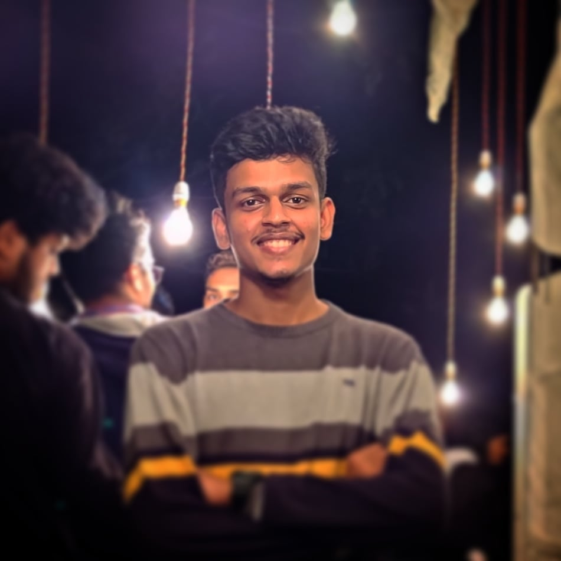
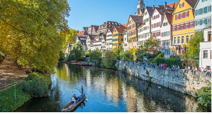
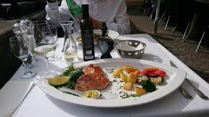

Before I get into the details of my research experience, here's a little something about me. I am Anwesh Mohanty, a third-year electrical engineering undergraduate. I am a passionate sports enthusiast (read football), video gamer and foodie. Since my first year in college I have been fascinated by research. I decided to go for a research internship after my third year to check if I actually liked research and could pursue research as a future. Over the past three months I have been working with the Embedded Systems research group of the University of Tuebingen and here is my recollection of that time.

But WAIT - before I start, I should warn you that this is going to be drastically different from previous year blogs in the sense that this blog won't contain any of the beautiful pictures that I captured during my stay in Germany or perhaps photos of famous European cuisines that I had. And if you reach the end of the blog and think that it was a snooze fest, then you know who to blame... the year 2020 (duh, obviously not me).


Well I know obviously you must be feeling a bit betrayed right now but trust me I was not lying earlier. Anyways let me start. As I sit down at my desk with my daily cup of coffee in my hand, I look at the beautiful river outside my apartment (refer Fig.1) and start reminiscing about the past three wonderful months that I spent in Germany; the food (refer Fig.2, also yes that's how my lunch looked like almost every day), the calm, serene countryside and the kind people. All of a sudden things start shaking and everything goes dark. I open my eyes to see my mom vigorously shaking me to wake me up for breakfast. And that is when I realise that it was just a dream. See, like I said, I wasn't lying. All the pictures above are from a simple Google search. And as I mentioned earlier this is not going to be like the previous "travel and research" blogs because I completed my research project/internship in the comforts of my house while a raging global pandemic terrorised the world.
Well the entire process started around Oct-Nov 2019, when I was selected through the PT cell interviews for both Boston University and University of Tuebingen. My original preference was Boston since I would be getting to work in collaboration with professors from MIT and Harvard (that would have been so awesome but it is what it is). Since at that time the threat of COVID-19 was still unknown, I had pretty much decided an itinerary for my awesome "future trip" to the US and had gotten myself all hyped up for it. But once countries recognized the threat that COVID-19 posed and started imposing travel restrictions, my plans for the US along with my enthusiasm evaporated into thin air. To make matters worse, the professor at Boston informed me that a work-from-home (WFH) situation would not be possible since my project involved a lot of lab work. That was the final nail in the coffin and I thought I would be sitting at home doing nothing for the rest of the summer.
(PS- Narcos is an awesome show and you should definitely watch it)
But as Benjamin Franklin said, "Out of adversity comes opportunity". I decided to send a mail to my guide professor at the University of Tuebingen and to my luck he actually said yes to a remote internship. After a brief period he sent me a list of projects which I could work on. I decided to work on a topic related to speech recognition (cannot really talk about the exact details). He introduced me to two of his PhD students who would be my mentors for the project. Soon I was set up with a Rocketchat account and added to the common chat of the entire research group, a GitLab account with access to the project contents and a secure shell connection to their remote cluster of GPUs called Lucille for all heavy machine learning tasks.
Since Mumbai is one of the worst hit places in the country, strict lockdown was imposed on the entire city for around 2 months. During the initial days of the project, stuck at home and without any hope of going out to even walk or play, I devoted quite some time to coding and developing my deep neural network model. It took me around a month to develop the final model, well to be honest only a week to code the model but three more weeks to debug the entire thing and make it perfect and compatible with the rest of the framework. Once this was done, all that was left was to keep calibrating the parameters until I got the desired results. Since each simulation took hours to complete, I developed a habit of binge-watching Netflix shows and now can proudly participate in discussions about several popular shows (still haven't watched The Office don't judge me XD) with my peers.
My mentors were actually pretty great and would answer even my silliest doubts on the same day or at worst, the next day. We would have 30-40 minutes video meetings almost every Friday to discuss our next course of action. We kept updating our work on GitLab and would cross check each other's contributions regularly. After around 2 months of work, I was done with my main task and then I presented my final project in front of the Professor. He was quite satisfied with my work and asked me to give a presentation later in front of his entire research group to which I happily obliged. A week later I gave my final presentation in a very interactive and fun session where we discussed the scopes of improvement and possible future work. Since the semester is starting pretty late this year, I am still continuing my work and brainstorming about possible avenues of improvements in my project.
To conclude, I would not say that this is what I had in mind when I first thought about doing research in a University. I had pictured myself living independently in a foreign country balancing work and travel, and in general having the time of my life. But taking into consideration how we are living in unprecedented times and how things have actually turned out, this is probably the best I could have hoped for. That's all from me and I am wishing that from next year onwards we can have the old "travel and research" blogs back again.
Cheers,
Anwesh.
Credits
This blog has also been uploaded by EnPoWER, IIT Bombay. Special thanks to them.